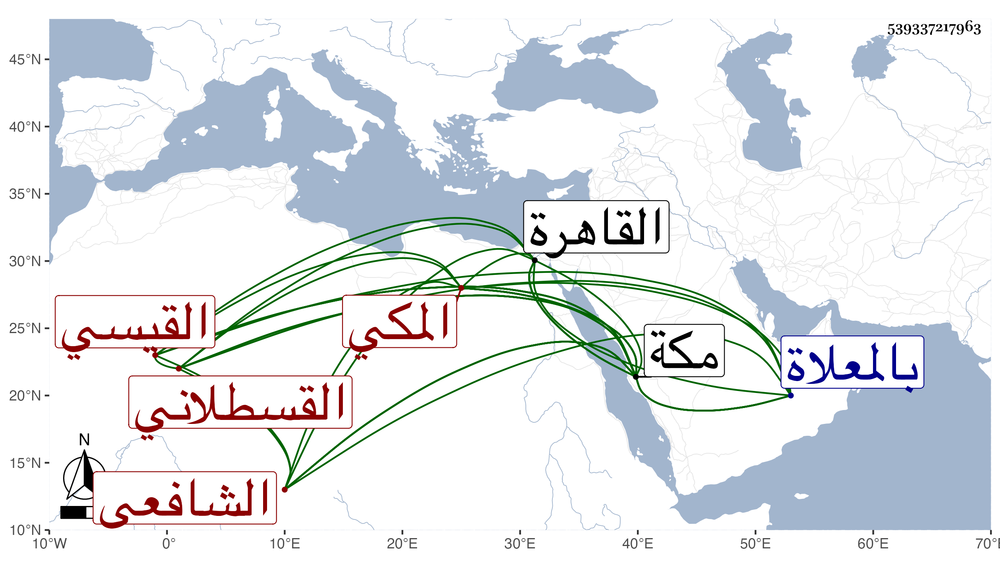

0902Sakhawi.DawLamic.ITO20230111-ara1.EIS1600.539337217963
Biography ID: 539337217963
124
محمد بن أحمد بن أبي الخير محمد بن حسين الزين محمد بن الأمين محمد ابن القطب أبي بكر محمد بن أحمد بن علي بن محمد بن الحسين بن عبيد الله بن أحمد بن ميمون الكمال أبو البركات القيسي القسطلاني المكي الشافعي والد المحمدين الكمال أبي الفضل والنجم والأمين والمحب الآتيين ويعرف بابن الزين . ولد في المحرم سنة إحدى وثمانمائة بمكة ونشأ بها فحفظ القرآن وأربعي النووي والحاوي وعرض على جماعة وسمع الزينين المراغي والطبري والشمسين الشامي وابن الجزري والجمال بن ظهيرة وابن سلامة في آخرين . وأجاز له ابن قوام وابن منيع وابن صديق والحافظان العراقي والهيثمي وابنتا ابن عبد الهادي وابنة ابن المنجا وعمر البالسي والسويداوي والحلاوي وآخرون ، وتفقه بالنجم الواسطي بحيث عليه في الحاوي وأذن له في الإفتاء والتدريس وكذا تفقه بإبراهيم الكردي الحلبي ، وحضر دروس الشهاب بن المحمرة بالقاهرة ومكة وكذا دروس المحب بن ظهيرة بمكة وباشر التوقيع عنده وعند غيره ممن بعده، وصار عين أهل بلده في المكاتيب مع اشتهاره بالعدالة وأعرض عنه البرهاني بعد أن كان ناب في العقود عن أبي اليمن النويري ثم ولي القضاء عنه أيضا لكن في مرض موته ولقيته بمكة فأجاز لي . مات في جمادى الأولى سنة خمس وستين بمكة وصلى عليه ثم دفن عند أهله بالمعلاة رحمه الله .
